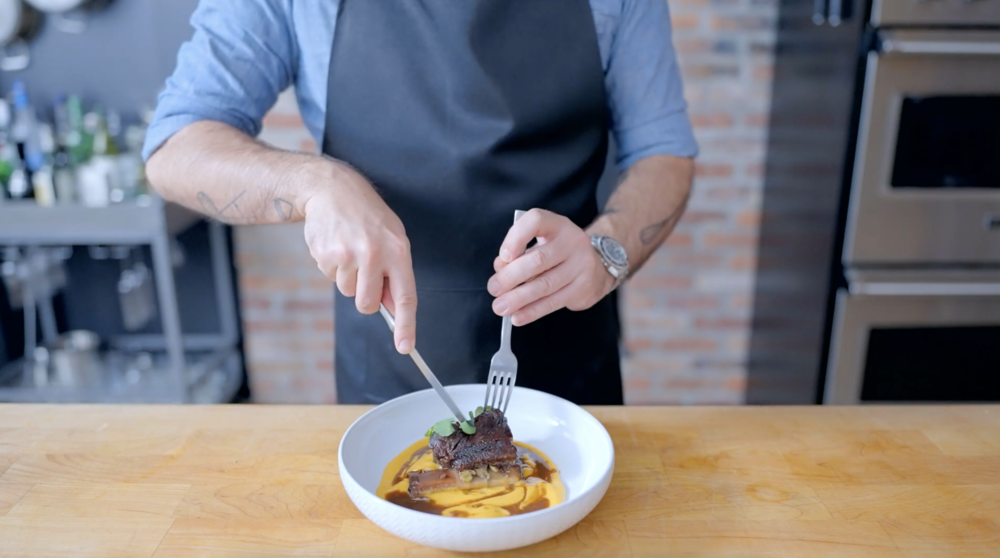

Squash and Beef from It's Always Sunny in Philadelphia

When squashing beef, it's always good to have squash and beef.
This week, the gang is squashing their beefs, a turn of phrase that Charlie takes too literally, leaving the door wide open for me to recreate it. It's almost too easy. Can we squash our beefs while enjoying some slightly more refined squash and beef? Probably, yeah!
Ingredients
- 4 large short ribs
- Kosher salt
- 2 Tbsp neutral oil, divided
- 1 Yellow onion, chopped
- 1 inch knob ginger, peeled & grated
- 1 garlic clove, minced
- 1 tsp fermented clove, minced
- 1 tsp fermented chili paste
- 1 Tbsp five-spice powder, toasted & ground
- 1 1/2 cups dry red wine
- 1 1/2 cups chicken stock, preferably homeade
- 2 Tbsp brown sugar
- 1/3 cup soy sauce
- 1/3 cup worcestershire sauce
- As needed water
- 1 butternut squashed, seed removed
- As needed ground black pepper
- 16 Tbsp browned butter, divided
- 3 Tbsp heavy cream
- 1/2 tsp xanthan gum
- To garnish: Pea shoot microgreens
Directions
- Season the short ribs with salt, then let them rest at room temperature for 30 minutes.
- Meanwhile, preheat the oven to 325 °F.
- Heat 1 tablespoon of oil in a large skillet over medium-high heat.
- Add the onion to the skillet and cook for 3 minutes or until lightly caramelized.
- Add the ginger, garlic, chili paste, and five-spice to the pan. Stir to combine and cook for an additional 30 seconds to 1 minute, or until fragrant.
- Deglaze the pan with red wine. Add the chicken stock, brown sugar, soy sauce, and Worcestershire sauce, then bring the sauce to a simmer.
- Add the prepared short ribs to the skillet. Add water as necessary to make sure they are mostly submerged.
- Transfer the skillet to the preheated 325 °F oven and cook for 2 ½ - 3 hours, or until the short ribs are tender and cooked through. Make sure to flip the short ribs about halfway through cooking.
- Meanwhile, set a separate oven to 400 °F and place a sheet tray inside to preheat.
- Scored the flesh of the butternut squash with a cross-hatch pattern.
- Coat each half in the remaining tablespoon of oil and season with salt and pepper.
- Transfer the squash halves cut-side down to the preheated sheet tray.
- Roast the squash in the preheated 400 °F for 25-30 minutes. Then, flip the squash cut-side up and cook for an additional 15-20 minutes, or until completely tender.
- While the squash is still hot, scoop out the flesh and transfer it to the bowl of a food processor. Add about ¼ cup of the browned butter and cream, then while the processor is running, stream in the remaining browned butter. Keep warm until ready to serve.
- Once the short ribs are cooked, remove the short ribs and keep warm until ready to serve.
- Strain the cooking liquid and skim off any excess fat, and reserve.
- Transfer the strained and skimmed cooking liquid to a high-powdered blender. Sprinkle the xanthan gum over the surface of the sauce and begin blending. With the blender running, stream in the reserved fat from the cooking liquid.
- Serve the short ribs and sauce with the browned butter butternut squash puree. Garnish with pea shoot microgreens.
Back to main page